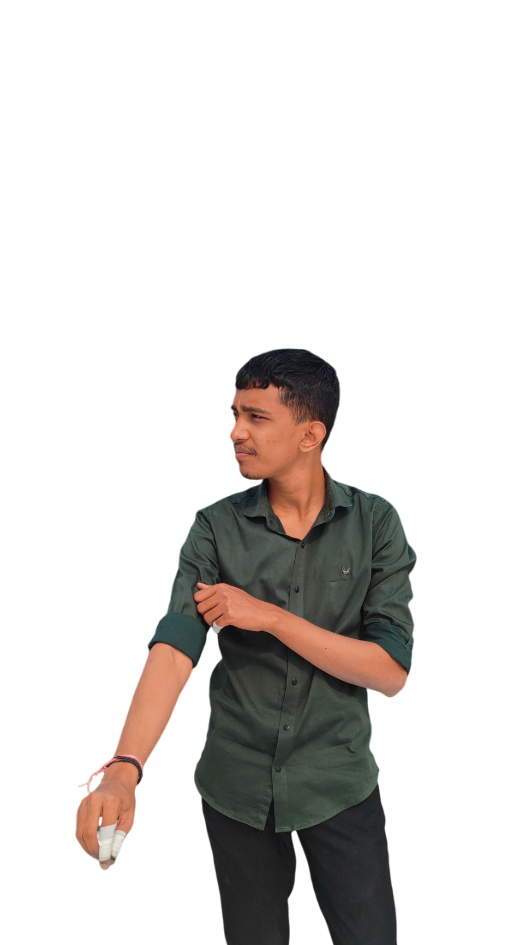
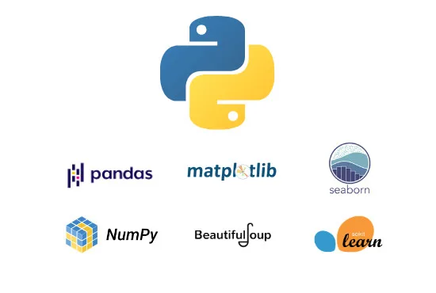
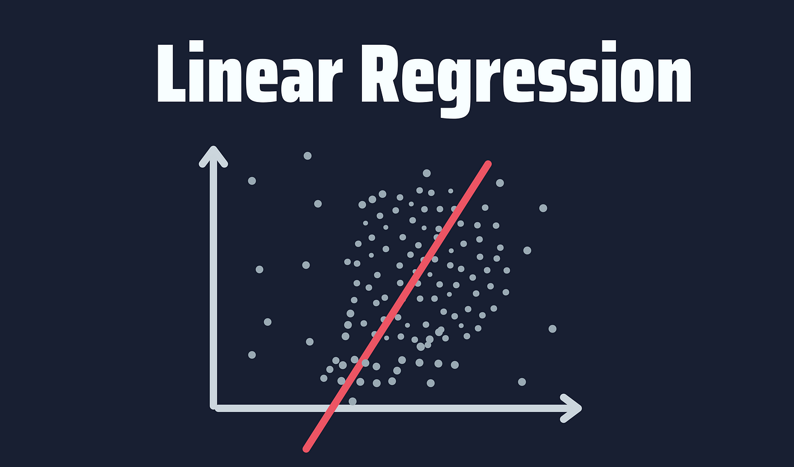
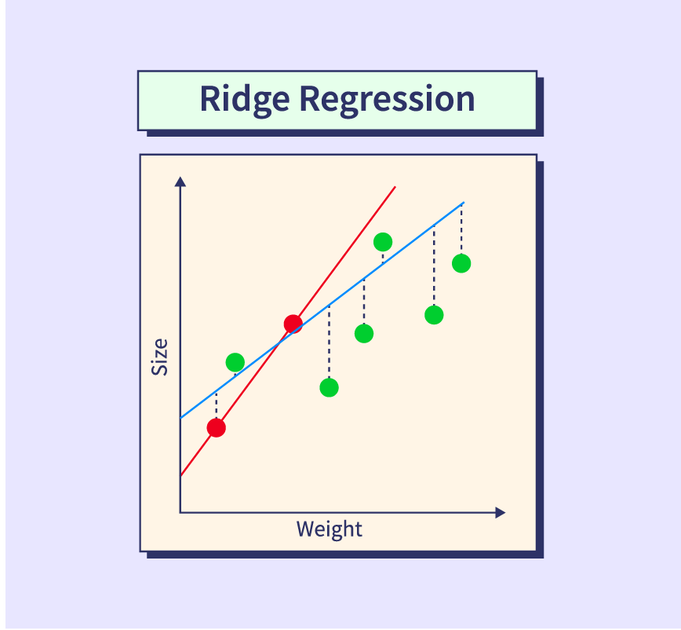
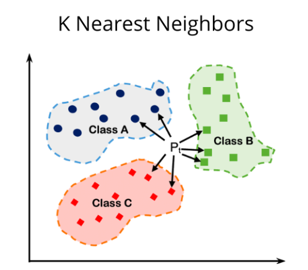
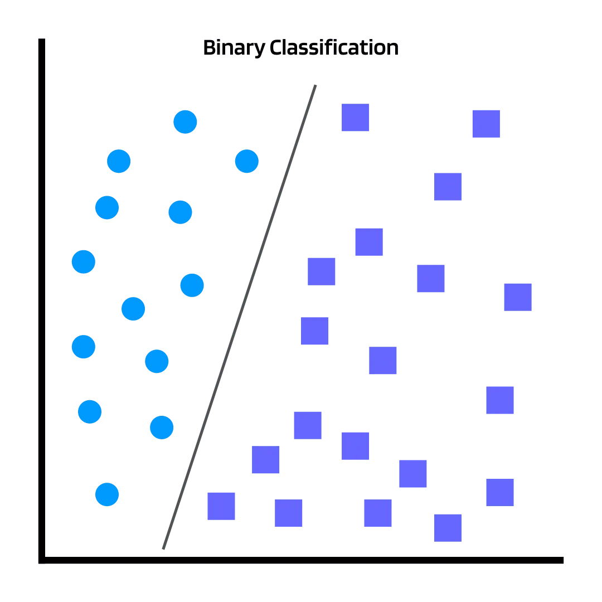
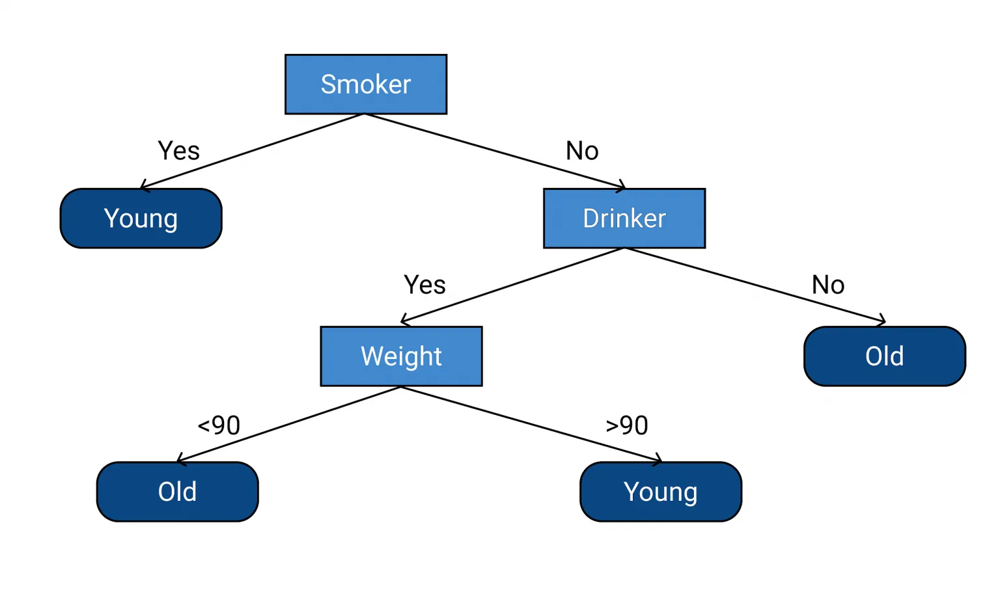
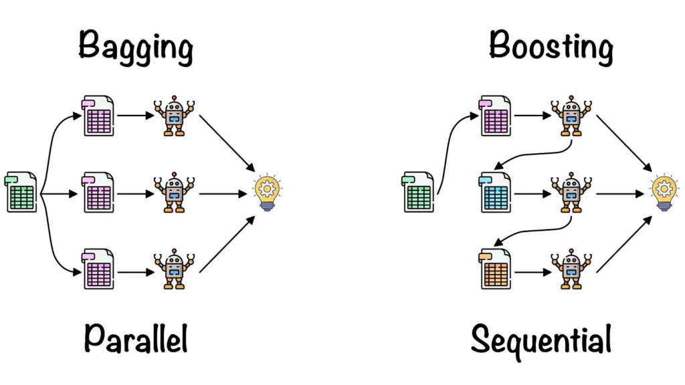
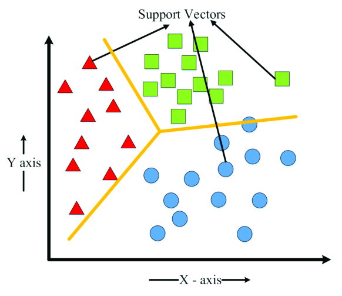

HE
LLO.

About
I'am Dharmesh Kota
Web DeveloperI'm an enthusiastic coder and web developer with hands-on experience in building full-stack applications using Node.js for the backend and React.js for the frontend. I enjoy creating clean, efficient, and user-friendly solutions. Beyond web development, I'm passionate about problem-solving and have an interest in Data Structures and Algorithms (DSA).
Skills
Development
Html Css Javascript Node ReactCoding
C++ Python
Machine Learning Portfolio








